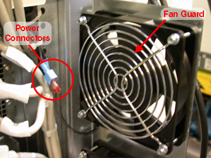

Operating Documentation
Direction 5193574-800, Rev# 22
LightSpeed 7.X Service Methods
Module Version 1.0, Version Date 2/14/07
Operating Documentation |
| Required Persons | Preliminary Reqs | Procedure | Finalization |
|---|---|---|---|
| 1 | Not Applicable | 1 hour | 20 mins |
This module describes the procedures used to replace the Rear Fan in the GOC4 or GOC5.
| Last Revised: | 4 March 2005 |
| Item | Qty | Effectivity | Part# | Manufacturer | |
|---|---|---|---|---|---|
| Medium Phillips Screwdriver | 1 | - | - | - | |
| Item | Qty | Effectivity | Part# | Manufacturer | |
|---|---|---|---|---|---|
| Rear Fan | 1 | - | - | - | |
| ||||
| Follow ALL required safety and PPE procedures customary for your organization, when working on this product. | ||||
| Condition | Reference | Effectivity |
|---|---|---|
Only trained service personnel should service the GE CT Scanner. | - | - |
Understand the conventions used in this publication. | - |
Select one of the following methods to Power OFF the Operator Console:
If Applications are UP, click on the [Shut Down] button and select [Shutdown]. The Operator Console monitor will display a 'Power Down' message when it is acceptable to power OFF the Operator Console.
If Applications are DOWN, open a Unix Shell. Type: halt.
Power OFF the console at the front panel switch. (SeeIllustration 1.)
Illustration 1: Console Power Switch

Refer to Console Cover Removal and Installation, for details.
Disconnect the Power to the Fan. See Illustration 2.
Firmly grasp the blue power Connector with one hand and firmly grasp the red power connector with the other hand.
Pull apart.
Repeat for the second power connector.
Illustration 2: Fan Power Connector and Fan Guard

Remove the four (4) screws that hold the Fan in place. Save the screws and the fan guard.
| NOTE: | Take Care to insure that the Air will be lowing out of the console, Use the arrow indicators on the Fan as a guide. The Arrow should be pointing out of the Console. |
Install the replacement fan using the four (4) screws, nuts and fan guard from the previous step.
Reattach the power to the fan.
Apply power to the console.
Verify that the fan is blowing air in the proper direction.
Air should be blowing OUT of the console.
If the air is blowing IN, you must reverse the fan. Refer toReplace the Existing Fan.
Install the console Rear cover.
Turn the system ON.